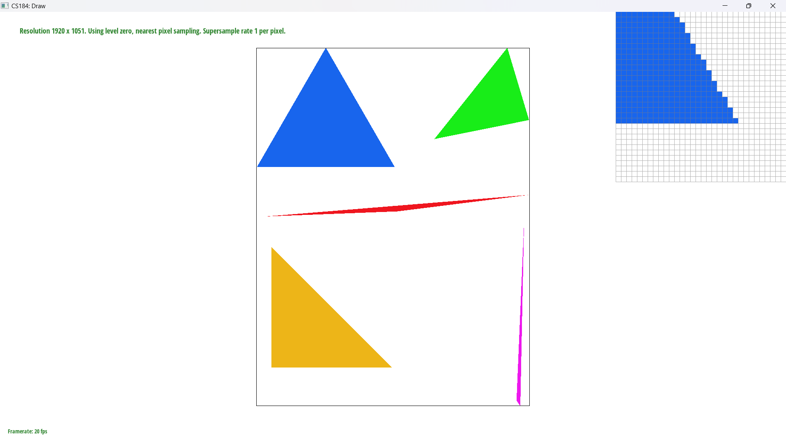
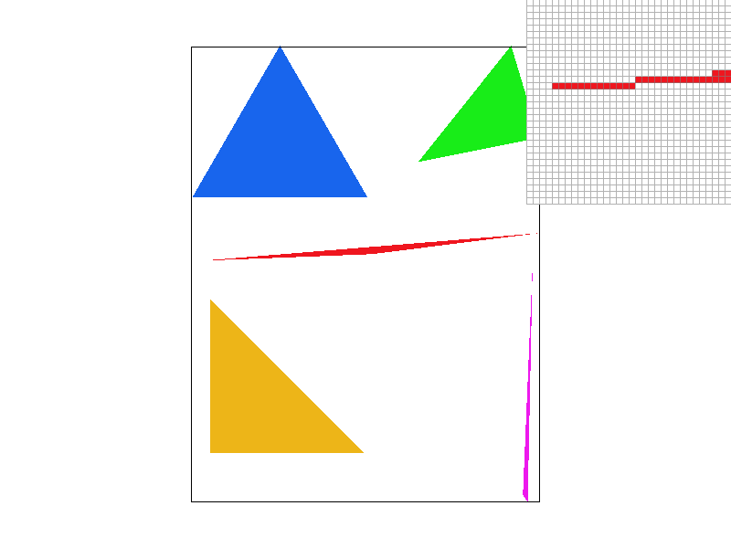
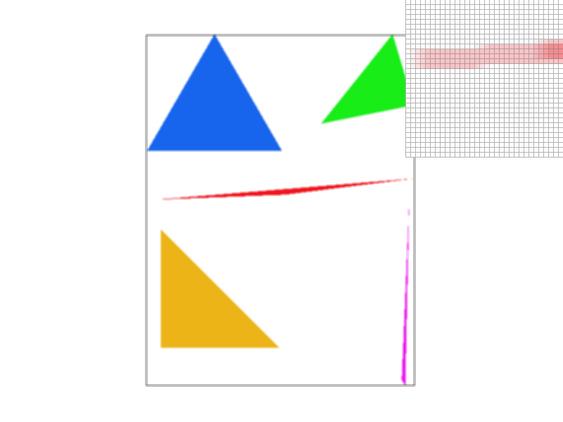
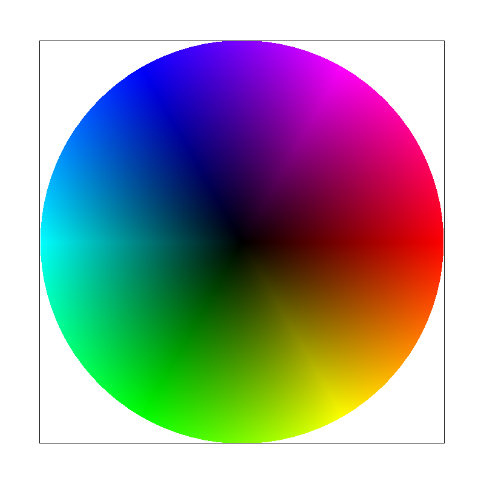
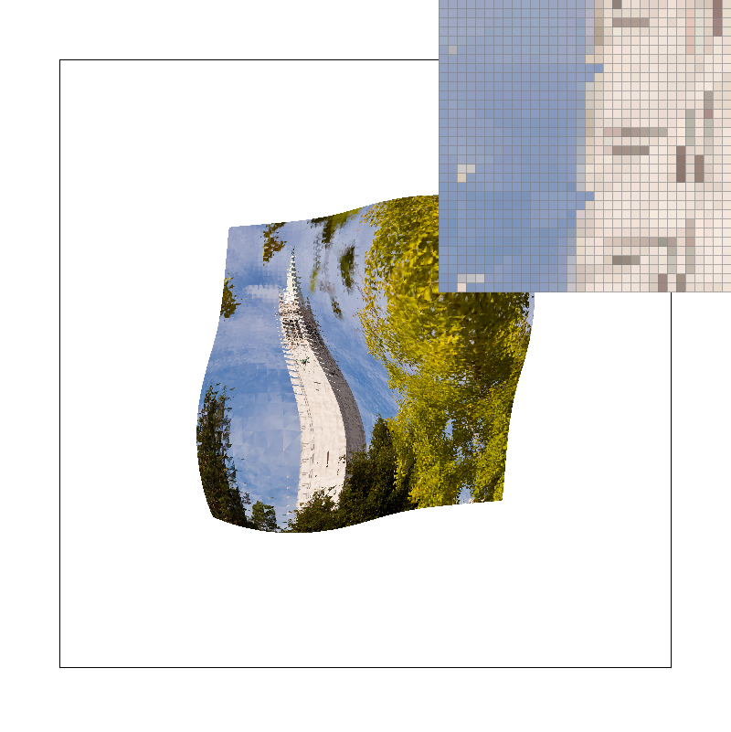
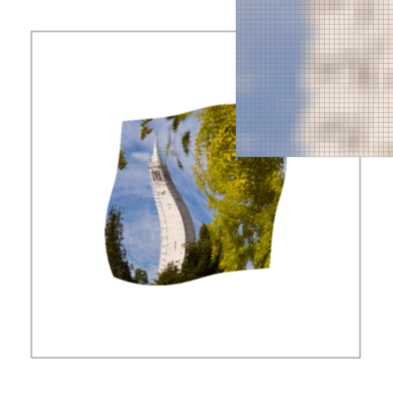
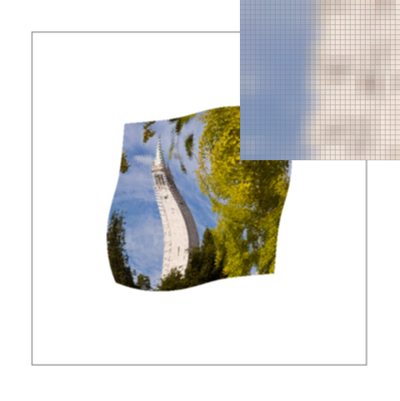
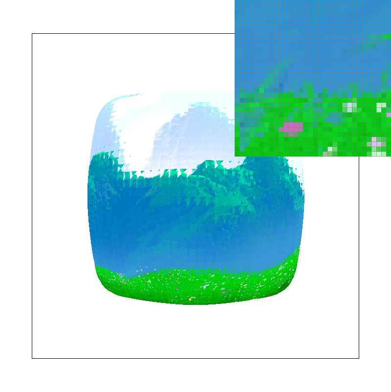
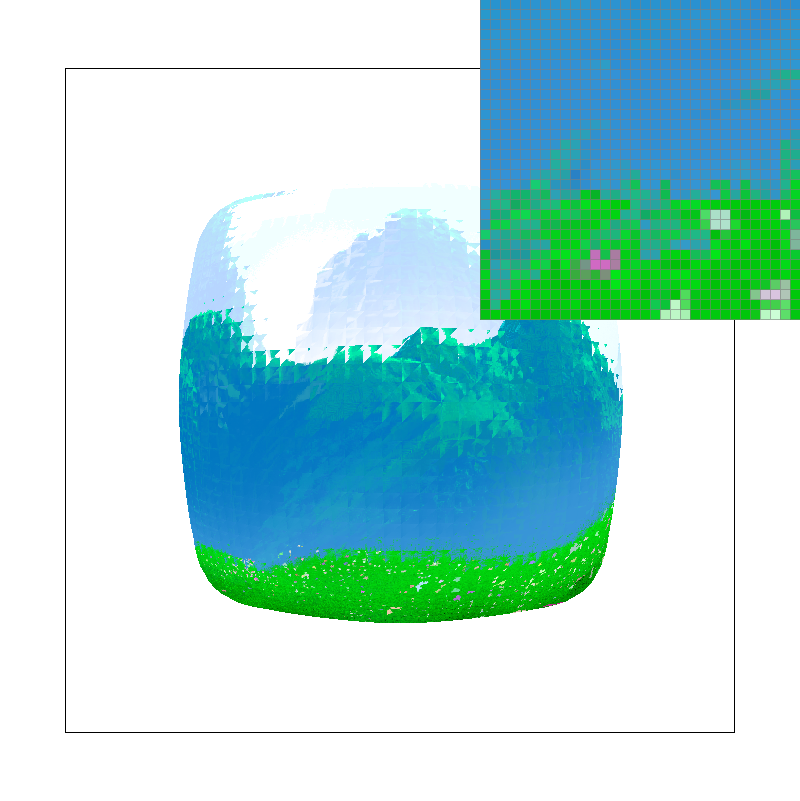
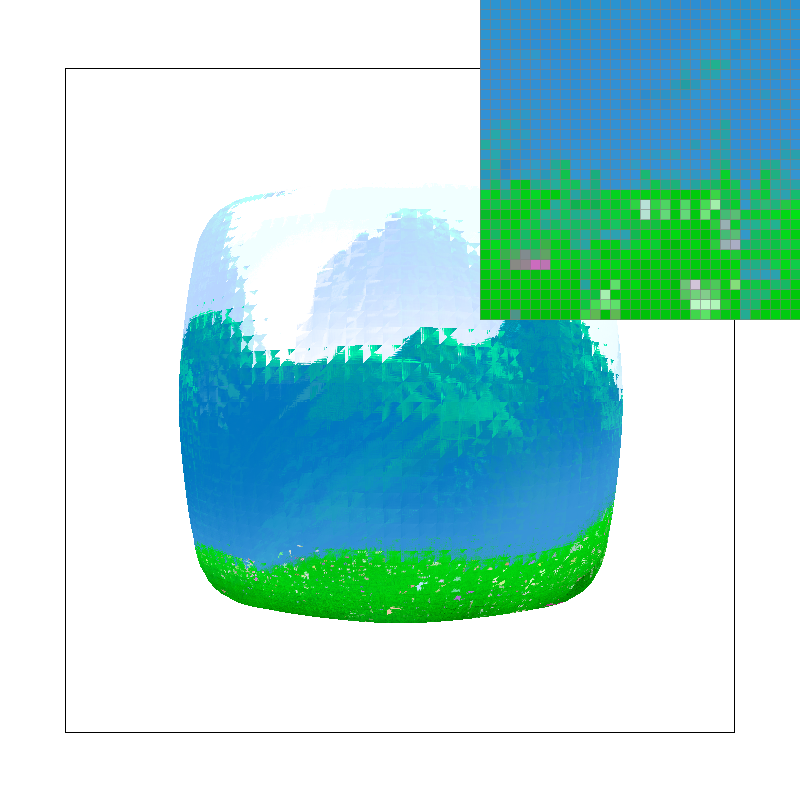

I first created a bounding box of the input triangle by finding the minimum and maximum values of the x and y coordinates of the triangles vertices. After this, I determined the correct winding order of the input triangle give points A,B, and C by computing the cross product of C-A and B-A. If this cross product had a negative z component, then I would swap the B and C vertices producting the correct winding order of vertices. I then traverse the pixels in the bounding box, testing if pixels are within the input triangle through an inside function I created that uses dot products to determine if the given point is inside the triangle or not, if it was, the pixel would be filled in with the input color. This method of rasterization is no worse than one that only checks samples within the bounding box, because it is a method that only checks samples within the bounding box.
For our supersampling algorithm, we use the framebuffer and samplebuffer datastructures to store the information needed to complete supersampling. First, we rasterize the upsampled triangles to the samplebuffer in the triangle rasterization function, this is different from our algorithm in the first task, as we simply called fill pixel to rasterize. After the supersampling is complete, in the resolve to framebuffer function, we convert from samplebuffer coordinates to the framebuffer coordinates, averaging the colors found in the samplebuffer into one pixdl in the framebuffer. This antialiases our triangles, creating smoother corners as we see in the images below. While this does create a smoother picture with less jaggies, we do see that the image is overall more blurry.
 Here we have my robot doing some lovely ballerina moves. Accomplished by applying some rotation and translations to the left leg bits.
Barycentric Coordiates can be thought of as assigning weights to points within a triangle, or any polygon such that being closer to a vertex makes the corresponding weight higher. For myself, I think of this as a point being pulled by the gravitational force of each vertext. In terms of color, if a point is closer to say a red vertex, it will appear more red than any other color. If a point is equidistant to all vertices of different colors, it will have equal amounts of each color.
Nearest Pixel samplings works simply, as the name implies, by choosing the texel that is closest to the u,v coordinate. This was implemented simply by just rounding the input u and v coordinates to the nearest integer. Bilinear sampling is more involved, seeking to blend the surrounding texels more smoothly by taking into account four different points surrounding the initial texel value. Below we showcase nearest point sampling and bilinear sampling taking one sample per pixel.
Next we showcase the same two pixel sampling methods, this time with 16x supersampling.
 We see that the bilinear method provides a generally smoother image than nearest-neighbor sampling, at the cost of more computation.
Level sampling, allows us to store differening levels of texture details in mipmaps. When textures are less important for whatever reason in our image, such as being smaller, we can pick the mip map level that has a smaller amount of detail. This allows us to improve our anti-aliasing and potentially better rendering speeds, at the cost of storing more data in mipmaps. In this project, we implemented level sampling by calculating the barycentric coordinates of our triangles in both the screen and textural spaces. The sampling itself is done through three methods, level zero sampling, nearest level sampling, and bilinear level sampling. Level zero sampling just always chooses the zeroth level of the mip map, resulting in the fastest method with the lowest anti-aliasing power. Nearest level sampling chooses the mip map level that is closest to the textural coordinate, this is slightly slower than zero level sampling, but with slightly better anti-aliasing.. Bilinear level sampling performs an additional linear interpolation between the two nearest mip levels to smoothly blend the two at the sampled texel, this being the slowest and but most powerful anti-aliasing method. These both relied on calculating the barycentric coordinates as mentioned before along with calculating the mip level based on these coordinates.
  